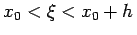

Inhalt Index DeskTop Bronstein

 Numerische Mathematik Integration gewöhnlicher Differentialgleichungen Anfangswertaufgaben
Numerische Mathematik Integration gewöhnlicher Differentialgleichungen Anfangswertaufgaben


Durch Integration erhält man aus der Anfangswertaufgabe zu (19.93) die Integraldarstellung
Diese ist Ausgangspunkt für die Näherung
die zu der folgenden Vorschrift des EULERschen Polygonzugverfahrens verallgemeinert wird:
Zur geometrischen Interpretation (s. Abbildung). Vergleicht man (19.96) mit der TAYLORentwicklung
| (19.98) |
mit , dann sieht man, daß die Näherung y1 für den exakten Wert y(x1) einen Fehler von der Größenordnung h2 hat. Die Genauigkeit kann durch Verkleinerung der Schrittweite h erhöht werden. Praktische Rechnungen zeigen, daß sich bei Halbierung der Schrittweite h auch der Fehler der Näherungen yi etwa halbiert.
Mit Hilfe des EULERschen Polygonzugverfahrens kann man sich sehr schnell einen Überblick über den ungefähren Verlauf der Lösungskurve verschaffen.